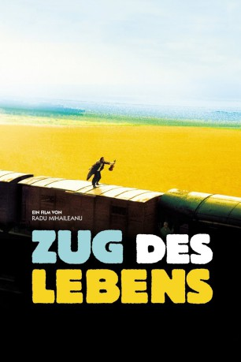
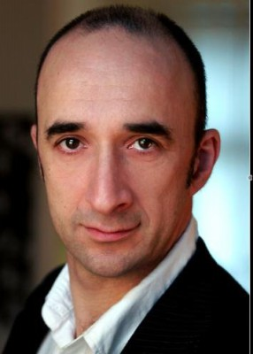

#587 Zug des Lebens
Alternativ: Train of Life (Englischer Titel)
 
 IMDB-Wertung: 7.7 / 10
IMDB-Wertung: 7.7 / 10  Metascore: 62
Metascore: 62 
1941. Unerbittlich rücken die deutschen Truppen vor und zermalmen alles, was sich ihnen entgegenstellt. In einem kleinen jüdischen Dorf im Osten Europas geht die Angst um, seinen Bürgern könne es bald so gehen wie vielen anderen davor: Gefangennahme, Verschleppung, Ermordung. Der Dorfnarr Schlomo hat den rettenden Einfall: Um den Nazis zuvor zu kommen, sollen sich die Dorfbewohner selbst deportieren und so die Flucht nach Palästina antreten. In einem getarnten Güterwagon tritt der Zug des Lebens seine Irrfahrt ins gelobte Land an. Zunächst läuft alles nach Plan, doch schon bald heften sich nicht nur die Deutschen an seine Fersen...
Jahr: 1998
Dauer: 103 Minuten
FSK: 6
Land: Frankreich Studio: Sunfilm EntertainmentTonspuren:
Untertitel:
Auflösung: 1080p (1920x864) Größe: 6215 MB
Genre: Komödie, Drama, Krieg
Regisseur: Radu Mihaileanu
Drehbuch: Radu Mihaileanu, Moni Ovadia
Soundtrack: Goran Bregovic
Darsteller:
 Rufus als Mordechai
Rufus als Mordechai- Michel Muller als Yossi
 Johan Leysen als Schmecht
Johan Leysen als Schmecht Gad Elmaleh als Manzatou
Gad Elmaleh als Manzatou- Razvan Vasilescu als The Tzigan Colonel
 Mihai Calin als Sami
Mihai Calin als Sami Luminita Gheorghiu als Rivka
Luminita Gheorghiu als Rivka-  Georges Siatidis als Itzik
- Constantin Dinulescu als Sage 5
 Rudy Rosenfeld als Le Chamess
Rudy Rosenfeld als Le Chamess- Cornel Ciupercescu als Le Facteur
- Leonie Waldman Eliad als Femme Shtetl 2
- Lionel Abelanski als Shlomo
- Clément Harari als The Rabbi
- Agathe de La Fontaine als Esther
- Bruno Abraham-Kremer als Yankele
- Marie-José Nat als Sura
- Serge Kribus als Schtroul
- Michel Israel als Sage 3
- Rodica Sanda Tutuianu als Golda
- Sanda Toma als Mere de Yossi
- Zwi Kanar als Lilenfeld
- Ovidiu Cuncea als Moitl
- Marius Drogeanu als Mendel
- Vladimir Jurascu als Von Glück
- Robert Borremans als Hauptsturmführer S.S.
- Bebe Bercovici als Joshua
- Michel Vanderlinden als Resistant 1
- Daniel Decot als Resistant 2
- Constantin Barbulescu als Resistant 3
- Constantin Codrescu als Sage 1
- Theodor Danetti als Sage 2
- Savel Stiopul als Sage 4
- Marian Stan als Homme 1 Synagogue
- Mugur Arvunescu als Homme 2 Synagogue / 3-eme Citoyen
- Cornel Vulpe als Le Maire
- George Ulmeni als Grossman
- Eugenia Serban als Titina
- Florin Kevorkian als Miron
- Ernest Maftei als Maleie
- Serban Danescu als Isaak
- Mihacia Bercu als Sheine
- Cristian Irimia als David
- Mircea Cojan als Sacha
- Alexandru Georgescu als Yehuda
- Corneliu Revent als Zacharie
- Mircea Constantinescu als Le Chef
- Constantin Draganescu als Le Paysan Comptoir
- Silvia Nastase als Femme 1 Eglise
- Domalta Constantinlu als Femme 2 Eglise
Datei: X:\1998\Zug des Lebens (1998, FSK6, 1920x864).mkv seit 11.03.2015
Festplatte: HD 1996-2002
 Es gibt insgesamt 86 Filme in der Gruppe '1998'
Es gibt insgesamt 86 Filme in der Gruppe '1998'